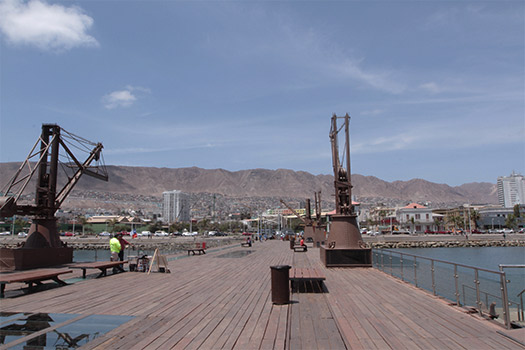
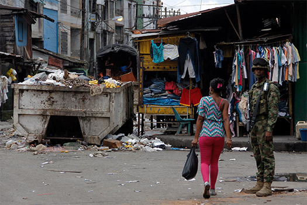
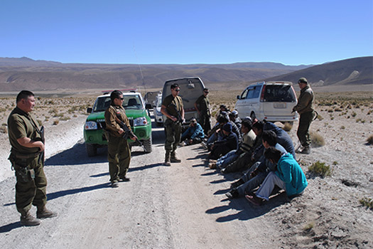
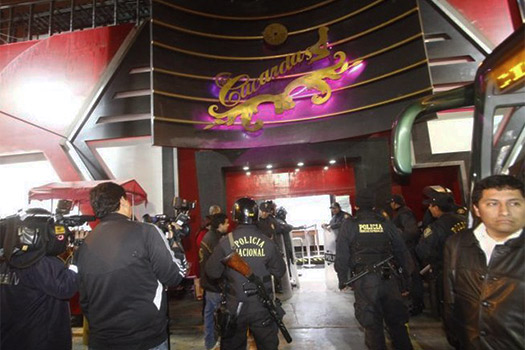
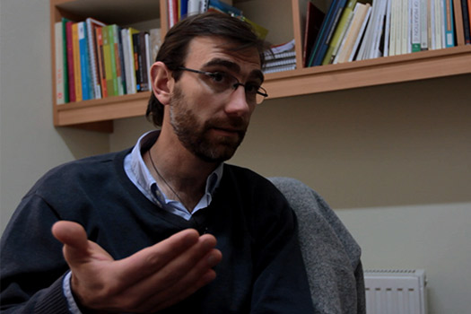
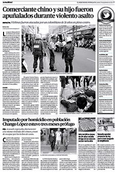
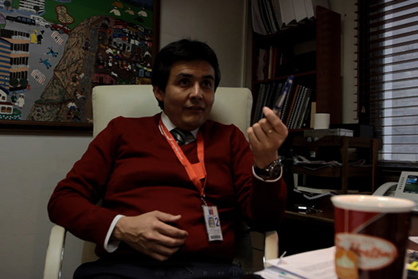

Él durmió durante meses en la playa, vivió en un conteiner y aguantó hambre. Era bodeguero y vendía vehículos cuando la conoció. Ella era cajera. Hoy viven en “Los Campamentos”, comunas al estilo Medellín pero más pobres ubicadas en el desierto de Atacama, al norte de Chile. Resisten 8 grados de noche y 30 de día. Su casa de madera, de 5x5 metros, no tiene piso. Huele a plástico quemado, heces y humedad; paradójicamente, al estilo Miami, tiene un televisor de 52 pulgadas, con equipo de sonido Samsung y Play Station 3.
Este peluquero fue conductor del alcalde de su tierra natal, trabajó en viñedos de España hasta que se quebró, volvió a Colombia y llegó a Chile. En Tacna, Perú, le cambiaron sus dólares por menos dinero y padeció por más de cuatro días en un bus sin aire acondicionado ni sillas reclinables. Entró a territorio austral el 2 de septiembre de 2015 con visa de turista y está ubicado en uno de los muchos cité, residencias en casonas antiguas, ubicadas generalmente en los barrios céntricos de Santiago. En un solo cité viven mínimo 15 familias extranjeras con un solo baño, una lavadora y una nevera. Jesús tiene una habitación de metro y medio por dos, con una cama de segunda, un colchón regalado, un viejo televisor de perilla y una cocineta.
Como Jesús y Edwin hay 28.491 migrantes colombianos residentes en Chile. En su mayoría viven en Santiago, la Región Metropolitana (conjunto de comunas que rodean a la capital) y Antofagasta. Y desde 2010 han comenzado a llegar de una manera alarmante a Chile. Todos buscan lo mismo multiplicar su plata por cuatro (un millón en Chile se convierten en cuatro en pesos colombianos). Lo que no sabe ninguno es que toda esa riqueza está basada en un crecimiento económico del 6%, gracias al empuje de la minería de cobre, un desempleo bajo del 6% y una inflación que se mantiene debajo del 11%.
Los colombianos tratan de llegar a los pasos fronterizos en el norte, a los aeropuertos y los más de 100 pasos ilegales que hay en límites con Perú, Bolivia y Argentina. Según cifras de Extranjería de Chile, en los últimos tres años han ingresado al país un total de 250.371 colombianos, de esos, un porcentaje indeterminado se han quedado como ilegales e irregulares. Este movimiento migratorio creció 3% en 2014 y en 2015 se ha multiplicado al 23%.
La teoría más válida para los investigadores es la de una primera ola migratoria de mujeres afro descendientes de Buenaventura y otras zonas del Valle del Cauca, que llegaron a trabajar en Antofagasta, ciudad del norte de Chile rodeada por montañas desérticas y un mar helado. Es árido pero pacífico para quien huye de la violencia, la pobreza y el abandono del estado: los colombianos lo llaman "Antofalombia".
Las primeras mujeres le huían a la guerra de las bandas "los Machos" y "los Rastrojos" que en el 2000 dejó decenas de muertos. Ellas llegaron a Chile después de un viaje de cuatro días en bus pasando por Ecuador y Perú. La minería de cobre estaba en furor pero sus oportunidades eran otras: trabajar como prostitutas, empleadas domésticas y vendedoras.
En el 2010, la razón fue la misma pero con diferentes protagonistas: “los Urabeños" se enfrentaron a un brazo armado de "los Rastrojos" conocido como "la Empresa", que puso al descubierto el terror de las casas de pique donde mafias desmembraban a sus víctimas.
Familias enteras, amigos y conocidos buscaban el sueño austral e incluso crearon una canción: "Esto es pa’ que vacilen, porque la que no está aquí está en Chile. Haciendo el botín y esperando a que giren a la famili para pagar los billes", canta Letter & J Money en La Chilena, un tema que estuvo de moda en Buenaventura y Antofagasta en 2013.
Detrás de las primeras mujeres, las segundas y las terceras migraron sus esposos y sus hijos. Luego de esa oleada de migrantes, Chile en 2011 puso un muro para los peruanos, bolivianos y colombianos que trataban de ingresar. Las autoridades de migración, amparadas en leyes de 1975, inspiradas en la doctrina de seguridad nacional de Pinochet, marcaron a estos extranjeros como riesgo y pusieron múltiples cortapisas para dificultar su entrada.
Aunque los colombianos solo necesitan su cédula al ingresar a Chile, para obtener la visa es necesario presentar múltiples requerimientos y que el agente de la PDI (Policía de Investigaciones de Chile) decida recibirlos. Según el Servicio Jesuita de Migrantes, 2.690 colombianos fueron rechazados en Chacalluta durante todo el 2014, en lo que va del año van 43.
Se debe a que la Oficina Extranjería, liderada por Rodrigo Sandoval, tiene una directriz más flexible.
13 rutas son las más conocidas para llegar por aire, tierra o agua a Chile. Según las autoridades de Migraciones, cada día, mínimo 15 colombianos intentan cruzar legalmente la frontera de ese país sin éxito. La mayoría de estos rechazados quedan vagando por Tacna (Perú) sin dinero y sin saber qué hacer. Muchos deambulan por el terminal Manuel Arturo Odría de Tacna pidiendo dinero para regresar a Colombia; ahí son pescados por coyotes, grupos de bolivianos o peruanos que los conducen por diferentes cruces clandestinos, entre esos pasos ilegales donde hay sembradas minas antipersona desde el 70, en la dictadura de Augusto Pinochet.
Por esos pasos clandestinos han pasado centenares de colombianos y algunos de ellos han perdido sus piernas, comenta Miguel Yaksic, coordinador del Servicio Jesuita al Migrante. Uno de ellos es Anderson Rodríguez Carreño que en octubre de 2013 intentó ingresar y terminó parado en un campo minado a la altura de la Quebrada de Escritos. Rodríguez sufrió la amputación del pie derecho y, luego de arrastrarse por más de 300 metros, fue auxiliado por Carabineros (policías de Chile) y trasladado al hospital Juan Noé de la ciudad de Arica, donde fue sometido a varias cirugías.
Otro caso ocurrió el 25 de enero de 2015. La víctima fue Marco Armando Cabezas Caicedo, de 20 años de edad. Transitaba por el mismo sector fronterizo, a solo 400 metros de la carretera internacional, a las 3:20 de la madrugada (cuando disminuyen controles de la PDI y Carabineros). Dio un paso sin cuidado y una mina le cercenó el pie izquierdo. El Ejército de Chile comunicó que el campo minado estaba señalizado pero ya nadie sabe a ciencia cierta dónde están las minas. Los militares expertos en explosivos llegaron a su rescate a las 4:35 de la madrugada llegó con vida a las 6:10 de la mañana al hospital Juan Noé de Arica.
"La lluvia en el altiplano ha inundado terrenos y movido las minas. Los mapas originales de donde estaban las minas ya no sirven, entonces el trabajo de desminado ha sido complejo y largo. Por eso, nadie sabe cuáles son los lugares más peligrosos", afirma Yaksic.
Ningún coyote, que promete pasar por 500 o 1.000 dólares a los colombianos, tiene la total seguridad de pasar con vida.
Y como este paso ilegal hay más de 100 cruces clandestinos por 6,300 kilómetros de frontera de Chile con Perú, Bolivia y Argentina. "Chile es un país con más frontera que territorio y, si ponemos filtros, lo único que hacemos es incrementar la irregularidad. La migración tiene un carácter líquido, lo que no entra por la vía formal no vuelve, entra por la vía informal. La migración es una inversión muy cara y, por lo tanto, aquellos que están tratando de entrar por nuestra frontera son personas que liquidaron todos sus bienes, dejaron encargadas a sus familias y asumieron un riesgo. Se embarcaron en un proyecto que no van a echar por tierra porque un funcionario les dice que no pueden entrar y, por eso, terminan siendo presas de esos coyotes", asegura Sandoval.
Para el Jefe de Extranjería, estas restricciones además aumentan la vulnerabilidad a la que se exponen las personas rechazadas en los puntos fronterizos. "Hay redes de peruanos que hacen entrar gente por el norte, bolivianos por su frontera y chilenos que son cómplices de estas bandas. Hace poco desbaratamos una red de tráfico que tenía su origen en República Dominica. La dueña de esa agencia de viajes era en realidad una asociación ilícita que traficaba personas y está cumpliendo ahora pena en Chile", indica Sandoval.
Otros colombianos, que no tienen ningún dinero para pagarles a los coyotes, llegan a los centros de acogida del Servicio Jesuita al Migrante. De las 2.029 personas que esta fundación atendió el año pasado, 660 eran colombianos (52% mujeres y 48% hombres).
Y los que tienen menos suerte terminan realizando trabajos menores en Tacna, Perú, para poder reunir dinero y devolverse a Colombia. Las mafias de la prostitución también reclutan a mujeres colombianas para venderlas en los “chupódromos” o prostíbulos de Tacna. En los más famosos, Venus y Las Cucardas, ganan por rato desde 60 soles hasta 550 (55.214 pesos a 506.130 pesos).
También otras colombianas ingresan al norte de Chile con la bendición de mafias de trata de blancas. En octubre de 2013 condenaron a tres chilenos que se dedicaban a ese tipo de trata. La banda había entrado a dos colombianas en julio de 2012 provenientes de Cali, a las cuales les ofrecieron ganar un millón de pesos chilenos mensuales como meseras en la ciudad de Salamanca pero nunca ganaron cifra parecida.
Según Carabineros, estas bandas les ofrecen viajar a Chile con trabajos bien remunerados y legales, pero luego las obligan al comercio sexual. De 60.000 pesos chilenos (262.709 pesos colombianos) que cobran por relación sexual deben entregar 30.000 (131.354 pesos) a sus empleadores. No les permiten salir durante el día y algunas conviven hasta con 20. En 2011, el grupo OS-9 de Carabineros afirmó que en estos lugares trabajaban 724 extranjeras en comunas ligadas a polos de actividad económica como la minería, la pesca y el sector forestal. Antofagasta lidera la estadística, en segundo y tercer lugar está Salamanca y Puerto Natales, respectivamente, y de sexta está Santiago.
Las colombianas ocupan el primer lugar en prostitución (354 mujeres ejerciendo). En Antofagasta, por ejemplo, trabajan sin pagan impuestos para el crimen organizado. La mayoría de estas mujeres tienen entre los 18 y 30 años y trabajan de 8 de la noche a 5 de la madrugada. Muchas niegan su labor y afirman ser meseras, bailarinas, coreógrafas y empleadas administrativas.
Por otro lado, la mayoría de los colombianos que sí logran pasar como turistas por estos puntos de frontera se ubican Santiago y Antofagasta. Casi todos llegan con visa de turista y se quedan así hasta que regularizan su situación o son expulsados del país.
"El oficial de la Policía Internacional chileno que está en la frontera tiene un espacio de discrecionalidad muy grande para decidir quién entra con criterios que él mismo establece. Por ejemplo, la asociación que hace la Policía Internacional con el afro descendiente es narcotráfico y prostitución, por eso, es más común ver rechazo de afros que de blancos en la frontera, lo que es muy arbitrario y discriminador", asegura Yaksic.
Sandoval, por su lado, afirma que la experiencia los ha obligado a tomar otros caminos y Extranjería se enfoca ahora más en la regularización de los migrantes que en su expulsión; crímenes recientes en los que se han visto relacionados colombianos han agravado la situación y la percepción de los chilenos no es muy positiva.
El 17 de julio de este año arrestaron a alias "Mundo Malo", mano derecha de alias "Sebastián" de "la Oficina de Envigado", que introdujo el préstamo gota a gota y la clonación de tarjetas en Santiago. El 26 de septiembre de 2014 capturaron en Santiago a alias "la Chilly", que era una de las mujeres más buscadas de la banda "los Urabeños", señalada de tener una casa de pique en el barrio San José de Buenaventura en la que desaparecieron 165 personas.
A esto hay que sumarle otras escenas de horror ocurridas en Antofagasta. El 15 de septiembre de este año dos ciudadanos chinos de 43 y 17 años fueron apuñalados tras resistirse a un asalto que ocurrió a plena luz del día en el centro de Antofagasta. Un colombiano de 21 años los atacó y propinó 35 puñaladas al mayor. En otro hecho ocurrido el 23 de mayo de este año, un colombiano fue asesinado en un campamento del sector alto de Antofagasta a puñaladas y una colombiana, de 32 años, le cortó el cuello a otra.
Esas imágenes han sido tema de debate de noticieros, programas de radio y encuestas, en las que los chilenos piden mejorar los controles en la frontera y hasta expulsar a los colombianos. Un 57,3% cree que debe haber más restricciones para el ingreso de inmigrantes y un 52% que los inmigrantes ilegales deben ser expulsados, según una encuesta de Radio Cooperativa. Y si a esto se le suma la confrontación con los agentes de la PDI y Extranjería para obtener los documentos, los bajos salarios, la explotación laboral, las condiciones de vivienda y de salud a los delitos de los que son víctimas, el sueño austral se convierte en una pesadilla.
"La idea del sueño chileno está sobredimensionada en Colombia. Está bien que vengan pero me gustaría que vinieran sabiendo qué se van a encontrar. Siento que en muchos colombianos existe una desilusión de lo que esperaban acá", afirma Sandoval. Y esa es la sensación en sus primeros meses en Chile. Desilusión, tristeza, soledad y rechazo, que solo los más fuertes superan, porque la migración no es para los débiles.
"La migración es una oportunidad y no un problema. Los migrantes colombianos que vienen a Chile son emprendedores. Nadie deja su casa, su tierra, su contexto para partir a un lugar distinto, a menos que sea alguien emprendedor y luchador que está buscando un mejor futuro para él y sus hijos”, concluye Yaksic.